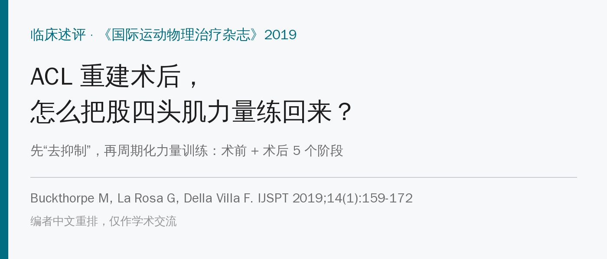
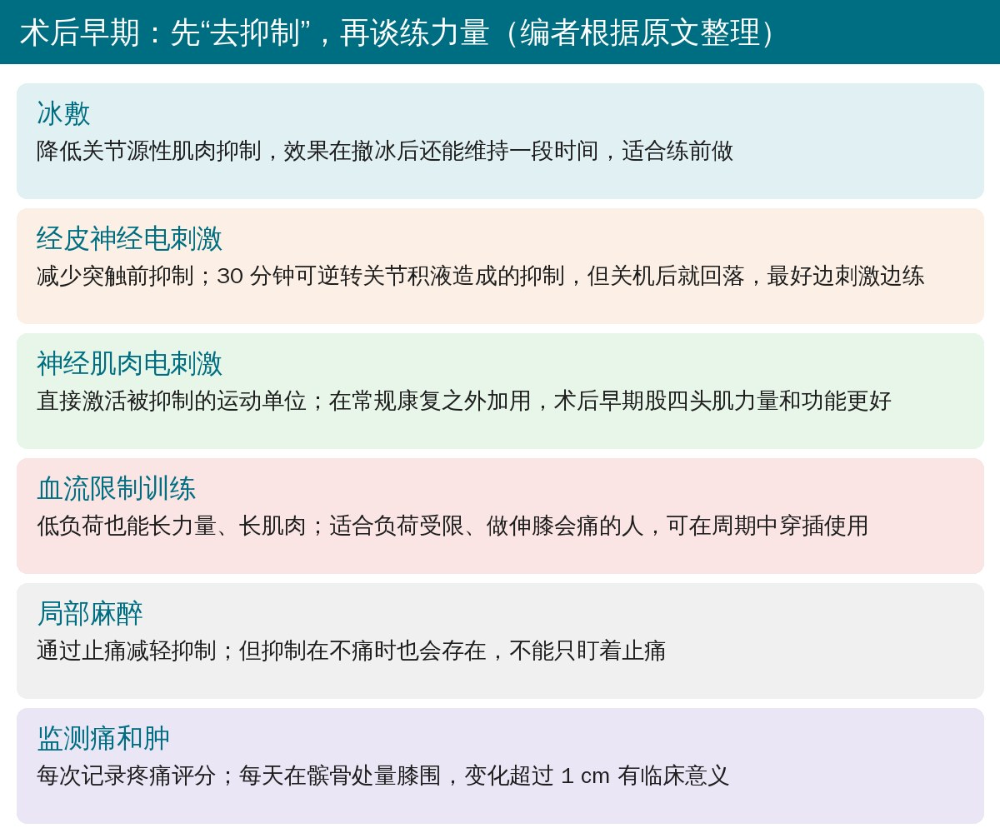
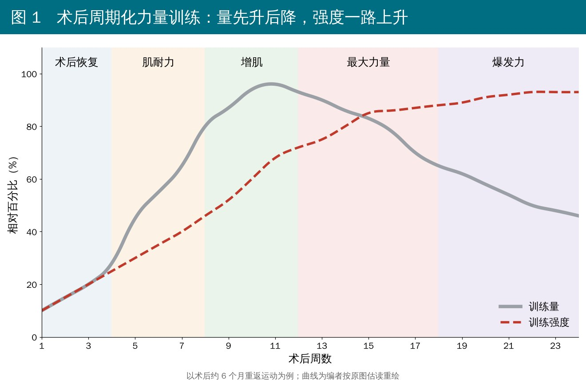
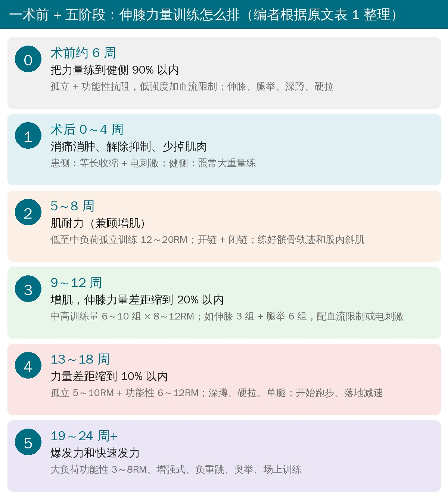
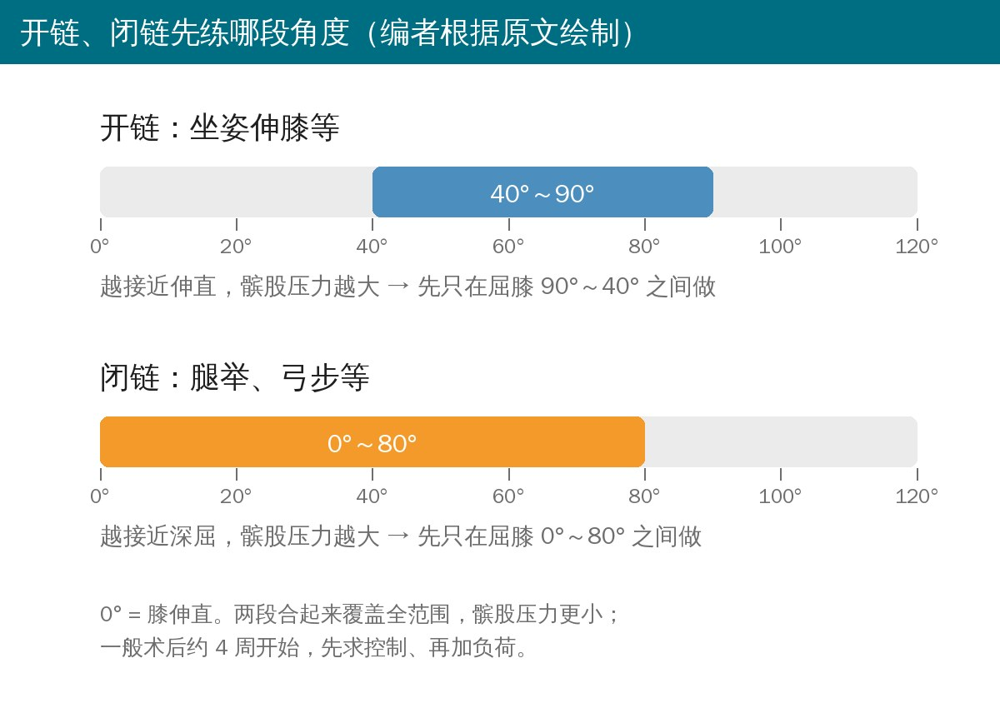

🔖原文信息（编者中文重排）
📚 文献信息
▪ Buckthorpe M, La Rosa G, Della Villa F. Restoring knee extensor strength after anterior cruciate ligament reconstruction: a clinical commentary. Int J Sports Phys Ther. 2019;14(1):159-172. doi:10.26603/ijspt20190159
▪ 作者来自意大利 Isokinetic 医疗集团（国际足联医学卓越中心）
▪ 临床述评，证据等级 5 级（专家意见），不是原始研究
ACL 重建后，股四头肌又小又没劲，是康复里最顽固的问题之一。大多数研究发现，到术后 6 个月、甚至重返运动时，伸膝力量通常都还没恢复。
• 后果不小：股四头肌两侧对称指数低于 90% 的人，再次膝伤的风险接近高于 90% 者的 3 倍（33% vs 12%）；对称性每提高 1 个百分点，再伤率下降约 3%
• 而且健侧也会变弱，拿患侧和健侧比，会把差距算小。按受伤前的数值算，术后 6 个月只有 29% 的人力量差距在 10% 以内；按常规健患侧比，则有 57%
• 伸膝力量是康复中期的关口：力量不回来，后面的动作质量、爆发力、专项训练都没法好好做
为什么这么难？一是关节源性肌肉抑制（AMI）：疼痛、肿胀和 ACL 里感受器的丢失，让神经系统“不让”股四头肌全力收缩，高阈值运动单位叫不起来，而且常常两侧都有；二是肌肉萎缩。在 ACL 缺失、不能代偿的人里，萎缩和激活不足合起来能解释约 62% 的股四头肌无力。
所以作者的思路分两步：① 尽量少掉力量；② 尽快、尽量把力量练回来。
术前 5～6 周的预康复（练力量、练股四头肌肌肥大、练单腿跳），术后膝功能更好；术前激活好、力量好的人，术后也更好。有人建议术前力量和单腿跳都达到健侧 90% 再手术，但不是每个人都做得到，目前也没有统一标准。

🔖术后早期的去抑制和激活手段（编者根据原文整理）
• 按 POLICE 原则处理：保护、适当负荷、冰敷、加压、抬高
• 冰敷：除了消肿，还能降低抑制，撤冰后效果还能维持一阵，适合放在练习之前
• 经皮神经电刺激：30 分钟能逆转关节积液造成的抑制，但一关机就回到原样，所以最好边刺激边练
• 局部麻醉：通过止痛减轻抑制；但不痛时抑制也会存在，不能只盯着止痛
术后早期用电刺激 + 主动等长收缩来保住肌肉和力量。同时盯紧两个指标：每次记录疼痛评分，每天在髌骨处量膝围，膝围变化超过 1 cm 就有临床意义，说明负荷可能过了。
疼、肿、抑制基本解决后，就要上一套周期化（分阶段、有计划地调整负荷和训练量）的力量训练。

🔖原文图 1 重绘：以术后约 6 个月重返运动为例，训练量先升后降，强度一路上升（曲线为编者按原图估读）
• 训练量：大训练量长肌肉更多，但和效果是“倒 U 形”关系，5 组 × 10 次和 10 组 × 10 次的增肌效果差不多
• 低负荷：只要练到接近力竭，也能募集快肌纤维，增肌效果和大重量差不多，适合关节还扛不住大重量的阶段
• 中等负荷（约 70% 1RM）：最大力量、肌肉体积都涨，但快速发力能力（RFD）基本不变
• 大负荷（约 90%）：快速发力能力能涨 70% 左右。ACL 术后即使力量恢复了，快速发力仍可能差 30%，所以后期一定要上大重量和爆发力训练
串起来就是：术后恢复 → 低到中负荷练到力竭（耐力、增肌）→ 70%～80% 1RM、5～8 组（增肌、力量）→ 90% / 5RM 低训练量（最大力量、离心力量、爆发力）。

🔖一术前 + 五阶段方案（编者根据原文表 1 整理，完整中文表见文末附录）
• 阶段 0（术前约 6 周）：力量练到健侧 90% 以内；孤立和功能性训练都做，低强度可加血流限制
• 阶段 1（术后 0～4 周）：消痛消肿、解除抑制；患侧只做等长 + 电刺激，健侧照常大重量练（同时利用交叉迁移效应）
• 阶段 2（5～8 周）：肌耐力为主，12～20RM 孤立训练，开链、闭链都做；重点练好髌骨轨迹和股内斜肌募集；配非负重的腰盆核心激活
• 阶段 3（9～12 周）：增肌，6～10 组 × 8～12RM，至少 2 个动作。原文举例：伸膝 3 组 + 腿举 6 组，配血流限制或电刺激；目标是伸膝力量差距缩到 20% 以内
• 阶段 4（13～18 周）：最大力量，孤立 5～10RM + 功能性 6～12RM（深蹲、硬拉、单腿、双腿），开始跑步、落地和减速训练；目标是差距缩到 10% 以内
• 阶段 5（19～24 周以后）：爆发力，大负荷功能性 3～8RM、增强式、负重跳、奥举、场上训练
作者特别强调：这是一个能在 6 个月回归球队训练的职业运动员的例子，进阶要看标准，不是看时间；合并软骨、内侧副韧带损伤等情况都要放慢。

🔖开链、闭链的起始角度范围（编者根据原文绘制）
开链（坐姿伸膝）能把股四头肌孤立出来练得更彻底，对它安全性的担心其实缺乏证据支持。研究显示开链或开链 + 闭链比单做闭链更能提高股四头肌力量，作者主张两者都用。难点在髌股关节：ACL 术后 1 年仍有 30%～50% 的人有髌股痛。所以开链先限制在屈膝 90°～40°，闭链先限制在 0°～80°，两者合起来覆盖全范围、髌股压力更小。一般术后约 4 周同时开始，先求控制、再加负荷。
• 力量差距大的时候，深蹲这类功能性动作会被“偷懒”：髋伸肌代替伸膝肌发力，股四头肌反而练不到
• 所以术后约 4～12 周以器械上的孤立训练为主；一般在术后 90～120 天做等速测试，伸膝力量达到健侧 80% 后，逐步加深蹲、硬拉、弓步等功能性训练
• 差距缩到 20% 以内后：孤立训练用大负荷 5RM，功能性训练用中等负荷 8RM
• 股内斜肌：自主训练很难单独练到它。髌骨轨迹不好的人，可以用肌电生物反馈（盯着股内斜肌、外侧肌不变）和髌骨贴扎，提高耐受度和股内斜肌激活
• 髋和核心：ACL 术后常伴髋肌力量不足，髌股痛的人也常有髋外展、后伸、外旋无力，练髋能减痛、改善功能
• 神经肌肉电刺激：能直接募集被抑制的运动单位，尤其是快肌纤维；荟萃分析显示，在常规康复之外加用，术后早期力量和功能更好
• 血流限制训练：适合负荷受限（术后早期）或做伸膝会痛的人，低负荷也能长力量、长肌肉，肌肉损伤小，可在周期中穿插使用
• 别忘了健侧：ACL 损伤是“一条腿受伤，两条腿的问题”，两侧都要练；练健侧的交叉迁移效应可能帮患侧恢复，但结果不一致
• 这是专家述评，证据等级 5 级。六阶段方案是作者团队的经验做法，没有经过对照研究验证
• 很多证据来自别的人群：负荷、训练量、快速发力的研究大多来自健康人或训练有素的人；血流限制的证据来自髌股痛患者，不是 ACL 术后人群
• “周期化优于非周期化”：作者自己也承认，ACL 术后最佳周期化方式缺乏证据，这是作者和部分同行的观点
• 时间线偏快：方案以 6 个月回归球队训练的职业运动员为例；现在更多证据支持 9 个月以后再重返运动，普通患者不要照搬时间
• 正文和表 1 的参数对不上：正文说增肌、力量阶段用 70%～80% 1RM、5～8 组，表 1 第 3 阶段写的是 6～10 组 × 8～12RM，举例又是伸膝 3 组 + 腿举 6 组；正文说最后阶段用 90% / 5RM，表 1 第 5 阶段写的是 3～8RM（8RM 只有约 80%）
• “代谢应激刺激分解代谢”：原文说代谢产物堆积“stimulate catabolism”，放在讲增肌机制的段落里，应该是促进合成代谢，疑似笔误
• 血流限制研究的对照组写错：原文说低负荷血流限制优于“中等强度加血流限制”的训练，但引用的 Giles 2017 研究标题就是“有和没有血流限制”的股四头肌训练，对照组是不加血流限制的常规负荷训练
• 电刺激“反转募集顺序”与所引文献不符：原文说电刺激让运动单位募集顺序反过来（先大后小），引用的 Bickel 2011 综述恰恰认为电刺激的募集是非选择性的，不是简单反转
• 健侧受影响的引用有矛盾：说健侧也存在力量、控制、本体感觉缺陷，引用的 Zult 2017 标题却是“ACL 损伤不影响健侧神经肌肉功能，动态平衡和自主激活除外”
• 引用错位：“抑制常常两侧都有”引用的是 Shelbourne 1990 的加速康复研究；膝围测量的信度研究对象是全膝置换术后患者，不是 ACL 患者
• 表述错误：“只有 29% 的人对称指数小于 10%”，应为“力量差距小于 10%”（即对称指数 ≥ 90%）
• 总结里冒出正文没讲的内容：总结提到用手法治疗、牵伸处理髌骨轨迹，用按摩去抑制，正文都没有展开
• 参考文献问题：文献 5 和 107 是同一篇（Lepley 2015）重复列出；文献 4 年份写成“2017; 2018”；文献 8 作者名和刊名拼错（Failia、Synder-Mackler、J Orthop Sports Ther）；表 1 把 OKC 写成了 OCK
• 先去抑制、再练力量：术后早期把冰敷、电刺激放在练习前或练习中，盯住疼痛和膝围，别一上来就硬加重量
• 患侧孤立、健侧大重量：早期患侧做等长 + 电刺激，健侧照常练；中期以器械孤立训练为主，开链 90°～40°、闭链 0°～80° 起步
• 练到接近力竭：中期用低到中负荷时，每组要做到接近力竭，否则刺激不够；疼痛限制负荷时考虑血流限制
• 后期一定要上大重量和爆发力：力量恢复不等于快速发力恢复，5RM 级别的力量训练、增强式和奥举类训练不能省
• 用“受伤前”或更严格的标准评估：健侧也会变弱，有条件就留存术前数据，别只看健患侧比值
表 1 ACL 重建术后运动员周期化抗阻训练示例
| 阶段 | 时间 | 目标 | 策略 | 伸膝练习 | 辅助手段（患侧） |
|---|---|---|---|---|---|
| 0 | 术前 6 周至手术 | · 为手术做好准备 · 抗阻训练使肌肉体积和力量恢复到健侧 90% 以内 | · POLICE · 按伤后状态做抗阻训练（孤立、开链、闭链、功能性）：低强度（加血流限制）、中强度（孤立和功能性加电刺激）到大负荷训练 | · 开链：伸膝 · 闭链：腿举 · 功能性：深蹲、硬拉及其变式，双腿和单腿 · 增强式（功能良好时） | · 电刺激 · 在良好监督下做孤立力量练习时加血流限制 |
| 1 | 0～4 周 | · 术后恢复 · 解决疼痛、肿胀和关节源性肌肉抑制 · 防止患侧萎缩和力量下降 · 保持健侧功能 | · 损伤处理 · POLICE · 健侧大负荷、低训练量抗阻训练 · 患侧低负荷等长收缩加电刺激 | · 患侧：只做孤立等长收缩加电刺激 · 健侧：同样练习，最大强度 | · 电刺激 · 冰敷 · 经皮神经电刺激 · 按摩 · 交叉迁移 |
| 2 | 5～8 周 | · 肌耐力（兼顾肌肥大） | · 低到中负荷孤立抗阻训练，配合辅助手段，支持肌耐力和力量恢复，12～20RM | · 低负荷膝控制（确保良好的髌骨轨迹和股内斜肌募集） · 开链和闭链 · 健侧大负荷、低训练量抗阻训练 | · 电刺激 · 交叉迁移 · 练前准备以减轻抑制：冷疗、按摩、牵伸、预激活、经皮神经电刺激 · 非负重腰盆练习，重新激活局部核心稳定系统 |
| 3 | 9～12 周 | · 肌肥大，伸膝力量恢复到与健侧差距 20% 以内 | · 中到高训练量的低、中强度抗阻训练（6～10 组 × 8～12RM），至少 2 个练习（开链和闭链） | · 低负荷（加血流限制）和中负荷抗阻训练。例：伸膝 3 组、腿举 6 组，配合血流限制或电刺激 | · 电刺激 · 血流限制 · 交叉迁移 · 负重和非负重腰盆控制与强化练习 |
| 4 | 13～18 周 | · 最大力量恢复到与“已训练”的健侧差距 10% 以内 · 发展闭链最大力量（等长、离心、向心） · 发展功能性力量 · 发展落地和减速控制 | · 中到大负荷孤立抗阻训练（开链和闭链，5～10RM），中等训练量 · 功能性抗阻训练（6～12RM） · 动作模式训练 · 双腿落地练习和开始跑步 | · 深蹲及其变式 · 硬拉及其变式 · 单腿和双腿 · 孤立：伸膝、腿举 · 场上跑步和减速练习 | · 练前准备（热身、按摩、牵伸、预激活） · 功能性练习技术到位 · 动作训练中的生物反馈 · 核心稳定训练 |
| 5 | 19～24 周以后 | · 恢复和发展爆发性神经肌肉能力 | · 高强度、低训练量神经肌肉训练 · 大负荷功能性抗阻训练（3～8RM） · 爆发力训练 · 场上灵敏练习 | · 功能性抗阻训练 · 增强式训练 · 负重弹跳类训练 · 奥林匹克举重 · 场上康复 | · 良好的热身和训练处方 |
该方案是一名在术后 6 个月回归球队训练的职业运动员的典型做法，时间线取决于伤情（如合并软骨、内侧副韧带损伤）以及个人愈合和进展情况。阶段之间应按标准而不是按时间过渡。
欢迎关注悦美力公众号，获取更多物理治疗的专业知识！
📄参考文献：
Buckthorpe M, La Rosa G, Della Villa F. Restoring knee extensor strength after anterior cruciate ligament reconstruction: a clinical commentary. Int J Sports Phys Ther. 2019;14(1):159-172. doi:10.26603/ijspt20190159
原文 PDF 未标注开放许可协议。本文为学术交流用的中文解读：图 1 为编者按原图估读中文重绘，方案卡、角度示意图和去抑制手段卡为编者根据原文整理绘制，表 1 为编者翻译。版权归原作者与期刊，如有侵权请联系删除。